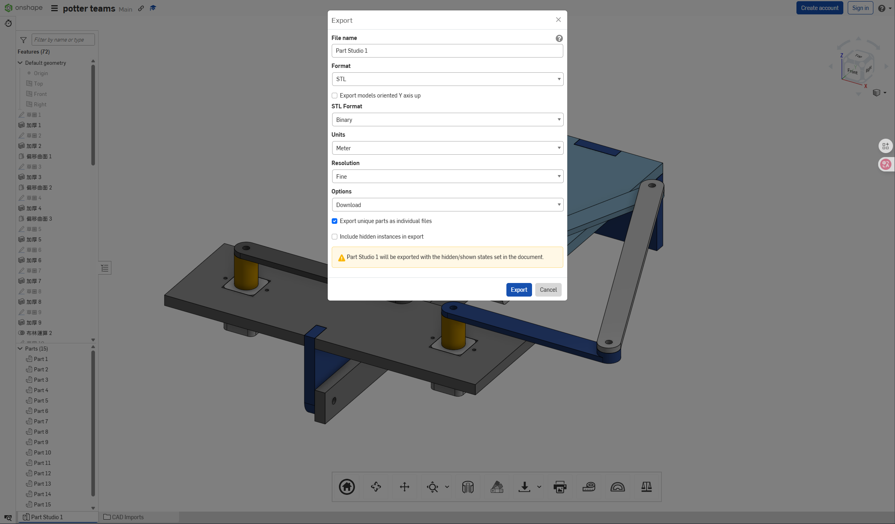
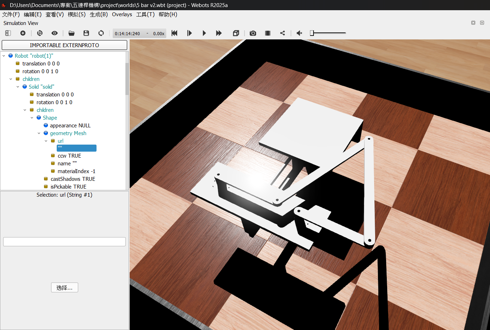
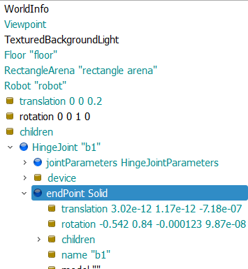
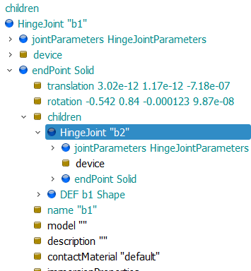
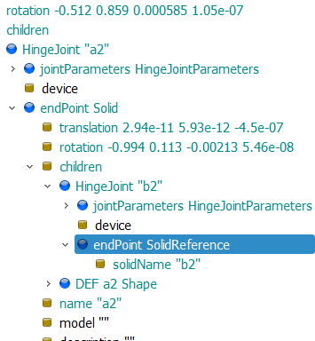

w7 <<
Previous Next >> Openduck mini
5-bar Linkage Plotter
如何切割:
1.先建立整體設計草圖~且在同個Part Studio繪出完整機構，才能方便確認整體運動關係。
2.確認分割位置~依據機構的運動需求和組配關係，決定從何分割零件避免重疊或出錯。
3.使用Split Part功能~透過平面或實體作為基準，將原本模型機構分割成多個獨立零件，形成能獨立編輯零件。
4.將各個零組件給予名稱方便後續組裝辨識。
5.建立Assembly組裝檔~將分割後零件匯入並且進行裝配和模擬。 確認連趕能運動且不干涉。
為何要切:
原因:1.能使結構清晰化方便修改和管理且模擬運動時需分開在Assembly中進行旋轉等運動模擬和分析 2.避免干涉錯誤可能在零件中有碰撞或過度干涉狀況發生須確保整體能順利運作 3.方便修改、若後續零件尺寸等不合需重新調整，能提高設計靈活度跟效率。
控制系統設計與動態模擬:
使用webots來後續的模擬與控制，Webots 是一款開源、多平台的機器人模擬軟體，專門用於機器人的建模、編程和動態模擬。
使用webots以下節點進行模擬
- 剛體（Solid）： 在 Webots 中，機器人和環境中的大部分物件都被定義為剛體 (
Solid Node)。動態模擬的基礎就是計算這些剛體在外力作用下的運動。需要為剛體定義其幾何形狀、碰撞範圍 (boundingObject) 和物理特性 (physics 節點)，例如質量、慣性矩、摩擦係數等。
- 關節（Joints）： 機器人的各個部分之間通過關節 (
Joint Node) 連接，例如旋轉關節 (HingeJoint) 或線性關節 (SliderJoint)。這些關節限制了剛體之間的相對運動，是模擬機器人運動的關鍵。
以下是操作步驟：
1.首先將所有零件獨立分開轉成stl檔

2.在webots新建一個世界，在主節點robot下建立多個solid，並使用shape —> mesh將零件stl檔案匯入

3.找出連桿零件並命名為a1、a2、b1、b2，在robot主節點下建立hingjoint節點，將連桿的solid剪貼到hingjoint的endpoint子節點

4.五連桿的a2、b2是被動桿，所以將a2、b2整個剪貼到a1、b1的子節點下，這樣被動桿就會跟主動桿一起連動

5.因為五連桿機構是閉合的，所以在被動桿a2的子節點下新增hingjoint，並在endpoint新增solidreference閉合節點，將b2放入，這樣a2和b2就會進行連動

w7 <<
Previous Next >> Openduck mini